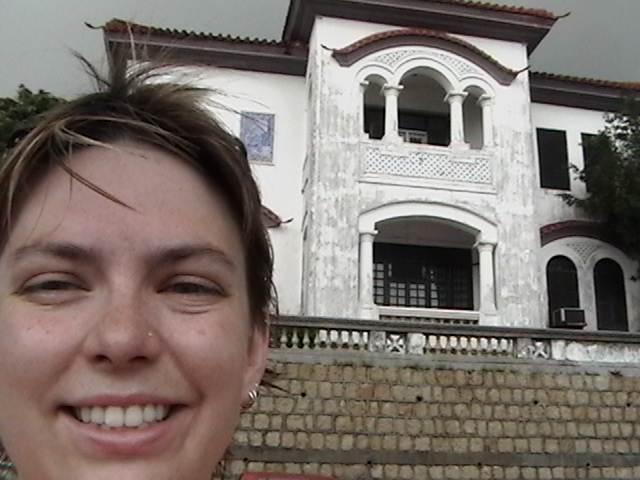
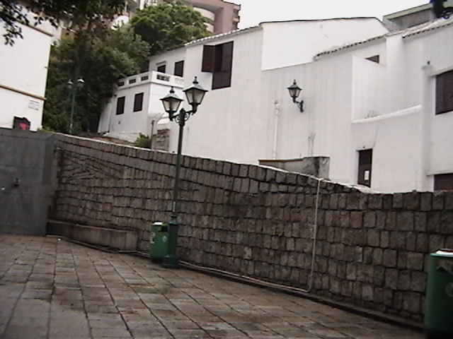
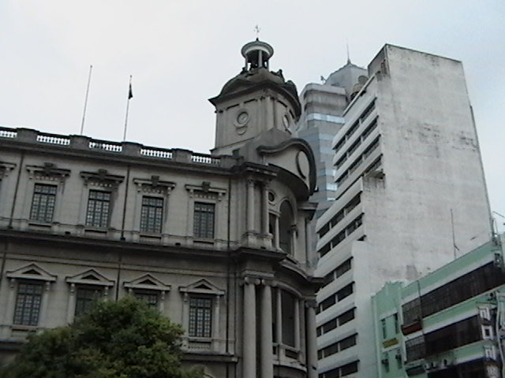
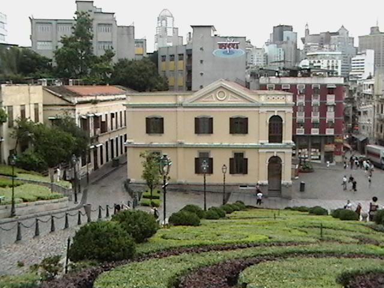

14 June 2005
One of our more recent schedule changes allowed for at least a day on the tiny penninsula of Macau. Like Hong Kong, Macau was recently turned over to the Chinese as an S.A.R. However, Macau’s influence is decidedly Portugeuse. Even though the day was hot, humid, and rainy, the architecture glowed.
This will largely be a photo entry because we basically just walked around the town and appreciated the cool historic buildings.




14 June 2005
This constant forward movement
has made a blur of everything.
Even you
are not as clear
as even yesterday.
Is it bad that I miss you
not with the decapitating pain
of a crushed bone –
not with the haunting memory
of a missing limb –
but with the sweet senese
of a secret
I can’t wait to reveal?
After all, loving you
does not hurt.
I do not bruise
remembering your touch,
I do not burn
imagining your breath,
I do not cry acid tears
when your eyes
dance circles around me
even in this photograph,
even in my mind.
Is it bad that I do not fear this slight separation?
This pause?
This insignificant
delay
between our life and
our
life?
After all, I am never alone.
You are here, even here,
even now.
You are the business man
sleeping soundly in the next seat.
You are the impatient woman in 15B
who cannot wait to land.
You are Joni Mitchell’s sweet
sweet voice and
you are a hundred country songs that leave me
choked up
every time.
You are the baby girl several rows ahead.
You are every laugh from my
tiny tiny screen and every
witty line of dialogue in Ocean’s 12.
How can I miss you any other way?
You are my pilot
after all.
You bring me home.
14 June 2005
We made it safely to Japan after a relatively non-eventful flight in… *ahem*…. business class. All in all, it sounds like Geoff actually had more legroom than I did, but anyway, it was fun actually sitting upstairs on a 747! I’ve always been curious what was up those little stairs.
As it turns out, it’s much the same as what’s downstairs in business class, just smaller.
So, we’re here at Chris and Kaz’s apartment. Kaz is on her way to Calgary tonight, so I won’t get to meet her. And, Chris is still at work so I won’t be seeing him until later. I think the general plan is to settle in a bit, and then go get sushi!!!!!
18 June 2005
Nothing like a little wandering around to make things interesting.
I’ve been to Osaka once before — a few hours last year, when Jen and I came here. Mostly to see the Aquarium, mind you, but we did see a few other things.
Our hotel has got a great view … of the harbour. If that sort of thing interests you, then you’re in luck. The Hyatt is, otherwise, quite isolated. Thankfully, they have a free shuttlebus to the JR Osaka station. A little more convenient (although the route is anything but direct!) than trying to take all the trains.

Destination: Domtomburi (and surrounding area). This is the major outdoor market zone. It’s big, it’s busy, it’s loud (lots of pachinko parlours), and it’s very Japanese. (Which is good, because if it was, say, Angolan, that might be a little weird.) We even found the area where every sushi restaurant in the area seems to buy its equipment (including the plastic food featured in the windows).


And after a great deal of effort (and patience on Amy’s part, because I was no doubt becoming quite annoying about this), we found some Osaka “zushi”. This is sushi, but formed and cut into squares. It’s a different presentation, and I honestly expected it to be a bit more different than it ended up being. I won’t say I was disappointed, but I guess I had a higher expectation for it.

18 June 2005
The last time I was in Japan (a little over a year ago), I’d wanted to go to Nara. I’d quite a bit about it, but just hadn’t gotten the chance to go. So when we planned this out, and happened to be spinning through Japan on our way home, it was a very fortunate happenstance that both of us wanted to be there.
Nara, as it turns out, is a very neat little city. Make no mistake, this is most definitely no town. But it doesn’t feel large. At least, if you’re within the “walled” portion. (I’m not sure if there’s an actual wall, but that’s what it looks like on the maps we’ve seen.)
Our trip there was an adventure and a half. First, shinkansen to Shin-Osaka, Nozomi-class. (There are three classes: Kodama, Hikari, and Nozomi. Although JR Rail Pass holders aren’t allowed on Nozomi, the cost to buy a ticket isn’t much different (maybe 300 yen) between them. And you save almost an hour.) Originally, we were to go to Kyoto, but Amy convinced me to go all the way to Shin-Osaka. Once there, we switched to a local train to Osaka station, then to a regional train that took us all the way out to Nara. From the moment we got off at Shin-Osaka, all the way to a taxi that we finally climbed into in Nara, we stood. My feet were KILLING me.
We’re staying at a ryokan, a small traditional Japanese guest house. Apparently, it used to be a geisha house. I don’t know if that’s Japanese geishas, or American geishas. (What’s the difference? A proper Japanese geisha is an entertainer. Their job was to placate and entertain powerful men who paid very highly for the services of a geisha. Despite beliefs, Japanese geishas were not prostitutes, unlike the American geishas. These were introduced by the U.S. Government after World War II as an effort to keep American soldiers from “disturbing” the Japanese people. These were prostitutes dressed up as geishas, and called as such for the exotic overtones.) I’d like to believe the house was a Japanese one. It’s nothing fancy — a pair of mattresses, a couple of chairs, and a noisy air conditioner. Toilets and showers are communal, but there doesn’t seem to be anyone around.
Nara is full of temples. Aside from being a former capital (many Japanese cities seem to hold this title), this is still a religious centre. Thankfully, most of the neat stuff was in walking distance of the ryokan. (For the record, though, our “walking distance” is probably a lot further than some people’s definition. We’ve walked a lot in this trip.)
Starting off at a pond near the Five Storied Pagoda, we found a healthy collection of turtles. Then we wandered through the Pagoda area and were introduced to the deer. Nara deer are … odd. They’re small, not as small as the ones on Miyajima Island near Hiroshima, but certainly smaller than the ones in Canada. They’re defined as “semi-wild”, meaning that while they are wild animals, they tolerate interaction with humans quite well. (Although there are a lot of signs telling you to be careful and not to enrage the deer.) It’s stuff like this that reminds me why many tourists in Banff (Bamf!) are told not to get too close to the elk.

We were distracted by a rather nice park on the way to Tennoji Temple. Aside from the wonderful Japanese stone lanterns, the biggest attraction we saw was the botanical garden. Apparently designed off various literal works, the garden contains a wonderful collection of plants, arranged into very beautiful pockets of splendour. Of particular interest was a small red deck built over a lilypad-covered pond. The pond was home to a school of carp, which a trio of elderly photographers were taking turns snapping pictures.

Tennoji Temple is quite impressive. Like other buildings I’ve been to that claim it’s “the largest wooden building in the world”, it’s big. Really big. And impressive. There’s a large Buddha that sits inside, sheltered by the building. Interestingly enough, the building is smaller than it once was (fire reconstruction), and the temple itself is smaller, having been reduced by similar damage.

We walked around through various alleys and laneways (Nara has many that are very picturesque. You’ll see something interesting down nearly every road, it seems.)

Amy finally found some Japanese yarn. I thought she was going to have kittens when she found it. She couldn’t decide, either.

I’d glad to have finally been to Nara. It’s a nice little place. If you’re thinking of coming to Japan, give it a thought. It’s an easy trip from Osaka … so long as you’re not carrying all your bags with you.
15 June 2005
Tokyo is a wonderful city. Even in the rain. Despite a delayed start (we were up late — it doesn’t help that Chris and I yak a lot), we soon found ourselves in Ginza, walking through the mist-like rain in search of not much except yarn (Amy’s got a project she’s trying to finish).
We went through the sweet electronic sanctity of the Sony Showroom [insert drool marks on the screen here], then over to the Apple store (four floors of pure industrial design nirvana), before crossing Ginza dori in search of, well, food. Amy spied a small sign that led us down an alley barely wide enough for us to walk, then down a set of barely-marked stairs into a basement restaurant that served some darn fine raumen, and some pretty funky dumplings.

Next to that was a paper store. I think Amy’s heart raced pretty much the whole time she was in there from the paper overload. Too much to choose from, and we’re almost out of money.
Matsuya and Mitsukoshi (two massive Japanese department stores) were next. But the illusive yarn Amy needs was not to be found. So we went to the food floors in Mitsukoshi to see what samples we could find. There was quite a lot.
We caught a subway over to Akehabara. This is geek heaven when it comes to all things “batteries not included”. [Insert more drool marks on the screen here.] Then it was over to Shibuya. The only real things to see there, aside from Shibuya itself, was the HMV, where I hoped to snag some of the music my cousin Jen had asked me to find. I found the artists, but sadly, all sold out. (Go figure.) Sorry, Jen, I’ll have to keep looking.

We were late meeting up with Chris and his friends Jessica and Alex for a late dinner in Chiba. They didn’t mind at all. Shinichiro was out again (he’d come out last night, too) as was another of Chris’ japanese friends (whose name I don’t want to screw up by spelling incorrectly).
We’ll be off for Nara before too long. Then Osaka, then home.
Three more sleeps!
15 June 2005
We left the hotel early this morning — before 7:00 am — to catch a train to the airport. Strangely fitting that our last train would be to our first plane in quite some time.
Chek Lap Kok airport was designed with an express train in mind, which is great considering how far out the airport is from Hong Kong Island. The train system (the Aiport Express) also lets you check in at the train station, so you don’t have to check in at the airport.

At the airport, we did a last bit of souvenir shopping. Well, Amy did, anyway. We then headed out to Gate 63 for our flight to Japan. It seemed strangely final. This was our first plane since landing in St. Petersburg all that time ago. Amy flew Biz class (as you already know), and I flew in Galley Slave (aka Economy) class. Lest anyone think I resent Amy for this, I don’t. We flew to Russia on Amy’s points. She had some leftover on United Airlines, and upgraded to Business Class. All the power to her.

Doesn’t mean that I’m not gonna bug her about it, though. I gotta have fun with this, don’t I?

For the record, I ended up with about as much footroom as Amy, if not a bit more, because I asked for an exit row. You want to have a good long flight? Get an exit row — you’ll be able to stretch out without concern. Doesn’t matter if the row is full and others are not — you’ll have tonnes of room to spare.

Two flights left. I hope they go quickly.
14 June 2005
Last country. Almost home.
Being in Japan, actually, is almost like being home. This country is so familiar to me (well, certainly Yotsukaido, Chiba, and Tokyo) that I didn’t actually notice getting off the plane, going through immigration, getting the bags, getting on a train, finding Chris, and getting to his apartment. I think I might actually have been here too much…
The flight from Hong Kong was okay. While Amy was enjoying her champagne at take-off, those of us in Galley Slave were firmly chained to our iron racks. (One minor improvement: less flesh-mauling spikes.) The smell of previous passengers’ fates faded once we got above 20,000 feet, though I suspect that might also be due to the thinner air at that altitude. (They save pressurization for the VIPs, you know.)
They still feed you, though. I always wondered what they do with the leftovers from the various peanut and pretzel packages. Now I don’t wonder anymore. I really don’t want to know what the liquid was, though. “Orange” isn’t supposed to be a light purple.
In the past, entertainment was watching your blood vessels bulge (due to air pressure, or more importantly, the aforementioned lack thereof). Those around me obtained a far greater spectacle, though, when the staff realized I was flying free on points. I think the whip marks will fade in about a week or so…
Amy looked quite relaxed and happy when I finally managed to break free of my shackles. I really need to remember to consider those USD$79 upgrades the next time they offer…
13 June 2005
One last thing we needed to do before we leave the Hong Kong area was check out Hong Kong’s forgotten half-sister, Macau. Macau was founded a couple hundred years earlier than Hong Kong by the Portuguese, and was originally the heavy weight title holder of foreign trading port until the British dethroned it with, shall we say, some less-than gentlemanly behaviour to get their way (I refer to the events leading up to the Treaty of Nanking).
Getting from Hong Kong to Macau is a fairly simple process: you either go overland (through China, which we can’t do since we’ve officially left China and don’t have a multiple-entry visa), or you take a ferry. While Macau might be Hong Kong’s forgotten half-sister, they seem to have a pretty solid relationship, especially now since they’ve both returned to the stewardship of China. The ferry service is perfectly representative of this — they run every 15 minutes.

The trip is 65 kms in between. It takes about on an hour. On a hydrafoil. How cool is that??
Macau is simultaneously different than Hong Kong, and very similar. It’s similar because, like Hong Kong, it’s a place where two cultures collide and coexist. It’s different because you don’t see English a lot (you do hear it, though, English is well-known), it’s mostly Portuguese (obviously).
Macau is small — much more than Hong Kong. You can walk around much of Macau Island in a fairly short period of time. After endulging in another round of dim sum, we proceeded to walk pretty much right around the southern tip and up to a small temple called A-Ma. It was easy to see the Macau Tower as we rounded the tip, on our way.
Following the temple, we walked along the walking path suggested by the Lonely Planet guide, but only in reverse. At least until we got rained on. A lot. Near torrential downpour. That kind of slowed us down. We were actually trapped under an eaves for about half an hour waiting for Niagara Falls to let up enough for us to continue on our way. As it stands, it barely let up enough for us to find a cafe to hold out until the rain stopped.


Not long after, we found a main square (the name of which now escapes me) that has very interesting tiling on the surface. There’s a fountain in the centre surrounded by lotus flowers. After the square, Amy and I kind of wandered a bit aimlessly until we found ourselves at the Royal Hotel — mostly to escape the intense heat and humidity for a while. There, we realized that sticking around in Macau, though nice, wasn’t entirely what we had in mind. A quick visit to the ruins of St. Paul, and we’d head back to Hong Kong.

The ruins of St. Paul are what is left of a grand cathedral that caught fire and burned to the ground … except for the facade, which still stands (partly thanks to a supporting structure still in place). It sits very out of place with the rest of the buildings surrounding it, except for the fort sitting next to it. The fort is quite old, dating back a few hundred years. The view from up there is quite good. The Macau Museum is there, too, but we didn’t get a chance to see it — the museums are all closed on Mondays.

Back in Hong Kong, we went immediately to dinner at Jade Garden, a thoroughly uninspired restaurant in Star House. (If you’re in Hong Kong, and reading Lonely Planet, take their advice and don’t go there. There are plenty of other much better restaurants in Kowloon … and plenty more in Hong Kong, for the HK$2.20 ferry fare.)
Sadly, we saw not much of Macau. There is definitely more there to see.
12 June 2005
Seven days from today, and I’ll be home.
I’ll be walking off an airplane, revelling in the familiar, the known, the certain. Home.
Home is where the heart is, and I left mine with Alex. I cannot wait to see her. See you soon!